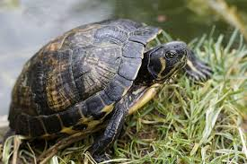

Là loài rùa đặc hữu của hai quần đảo xa là Galapagos và Aldabra, rùa khổng lồ Galapagos là loài rùa lớn nhất trên thế giới. Mẫu vật khổng lồ nhất được xác nhận có chiều dài lên tới 135,8 cm (4 feet 5 inch) và cân nặng gần 411 kg (919 pouch). Loài rùa này cũng là loài động vật có xương sống có tuổi thọ cao nhất, trung bình chúng có thể sống đến hơn 100 năm. Con rùa già nhất từng được ghi nhận đã sống được tới 152 tuổi.
Những con rùa khổng lồ có quá trình tiến hóa lâu dài, chúng có nguồn gốc trong lục địa, ban đầu tìm đường đến các hòn đảo từ đất liền, chẳng hạn như loài rùa khổng lồ Aldabra và rùa khổng lồ Mascarenes có liên quan đến rùa Madagascar trong khi rùa khổng lồ Galapagos có liên quan đến rùa đại lục Ecuador. Hiện tượng tăng trưởng quá mức này được biết đến như là sự khổng lồ hóa của đảo hoặc sự biến thiên quy mô khổng lồ (quy tắc Fuler). Nó xảy ra khi kích thước của các động vật được cô lập trên một hòn đảo tăng lên đáng kể so với họ hàng trong lục địa của chúng
Điều này là do một số yếu tố như áp lực ít hơn của những kẻ săn mồi, ít sự cạnh tranh, hoặc như là một sự thích nghi với sự biến động môi trường ngày càng gia tăng trên các hòn đảo. Tuy nhiên, những con rùa khổng lồ không còn được coi là những ví dụ về biến thiên quy mô khổng lồ trên đảo, vì chúng đã phát triển kích cỡ khổng lồ của chúng trên đất liền. Rùa khổng lồ đã từng phổ biến qua các hệ động học Kainozoi ở Á-Âu, Châu Phi và Châu Mỹ. Những động vật này thuộc về một nhóm bò sát cổ xưa, xuất hiện khoảng 250 triệu năm trước. Vào kỷ Phấn trắng, 70 hoặc 80 triệu năm trước, một số đã trở nên khổng lồ. Khoảng 1 triệu năm trước, những con rùa đã đến quần đảo Galápagos.